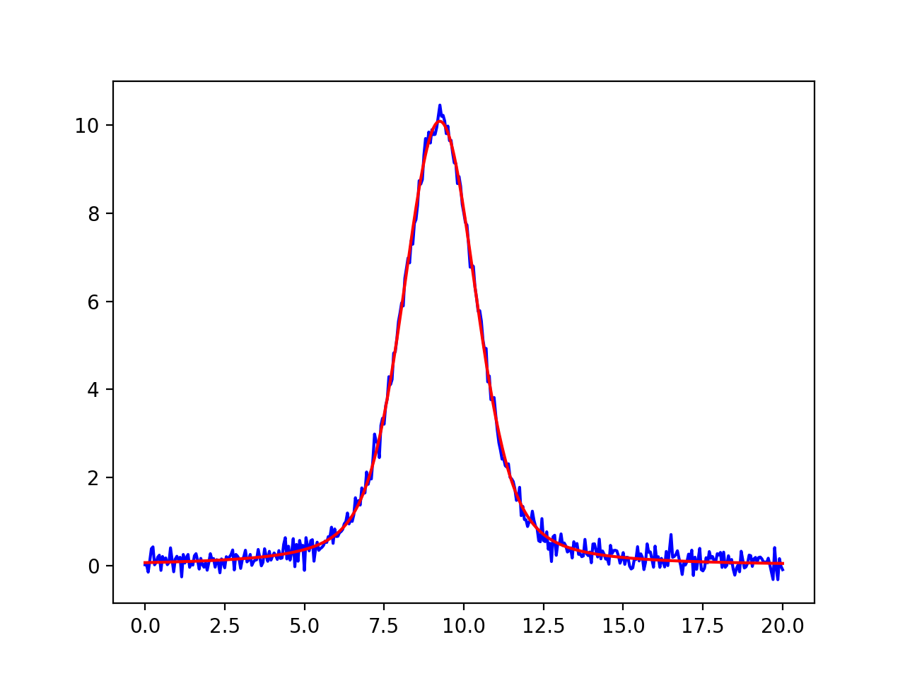
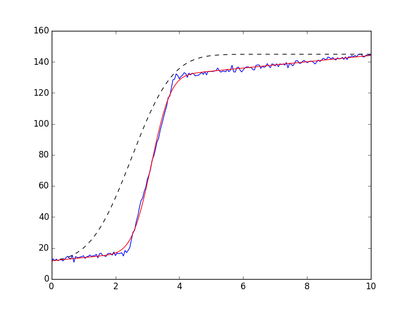

Built-in Fitting Models in the models module¶
Lmfit provides several builtin fitting models in the models module.
These pre-defined models each subclass from the model.Model class of the
previous chapter and wrap relatively well-known functional forms, such as
Gaussians, Lorentzian, and Exponentials that are used in a wide range of
scientific domains. In fact, all the models are all based on simple, plain
python functions defined in the lineshapes module. In addition to
wrapping a function into a model.Model, these models also provide a
guess() method that is intended to give a reasonable
set of starting values from a data array that closely approximates the
data to be fit.
As shown in the previous chapter, a key feature of the mode.Model class
is that models can easily be combined to give a composite
model.Model. Thus while some of the models listed here may seem pretty
trivial (notably, ConstantModel and LinearModel), the
main point of having these is to be able to used in composite models. For
example, a Lorentzian plus a linear background might be represented as:
>>> from lmfit.models import LinearModel, LorentzianModel
>>> peak = LorentzianModel()
>>> background = LinearModel()
>>> model = peak + background
All the models listed below are one dimensional, with an independent
variable named x. Many of these models represent a function with a
distinct peak, and so share common features. To maintain uniformity,
common parameter names are used whenever possible. Thus, most models have
a parameter called amplitude that represents the overall height (or
area of) a peak or function, a center parameter that represents a peak
centroid position, and a sigma parameter that gives a characteristic
width. Some peak shapes also have a parameter fwhm, typically
constrained by sigma to give the full width at half maximum.
After a list of builtin models, a few examples of their use is given.
Peak-like models¶
There are many peak-like models available. These include
GaussianModel, LorentzianModel, VoigtModel and
some less commonly used variations. The guess()
methods for all of these make a fairly crude guess for the value of
amplitude, but also set a lower bound of 0 on the value of sigma.
GaussianModel¶
-
class
GaussianModel(missing=None[, prefix=''[, name=None[, **kws]]])¶
A model based on a Gaussian or normal distribution lineshape. Parameter names:
amplitude, center, and sigma. In addition, a constrained
parameter fwhm is included.
where the parameter amplitude corresponds to \(A\), center to
\(\mu\), and sigma to \(\sigma\). The full width at
half maximum is \(2\sigma\sqrt{2\ln{2}}\), approximately
\(2.3548\sigma\)
LorentzianModel¶
-
class
LorentzianModel(missing=None[, prefix=''[, name=None[, **kws]]])¶
A model based on a Lorentzian or Cauchy-Lorentz distribution function. Parameter names:
amplitude, center, and sigma. In addition, a constrained
parameter fwhm is included.
where the parameter amplitude corresponds to \(A\), center to
\(\mu\), and sigma to \(\sigma\). The full width at
half maximum is \(2\sigma\).
VoigtModel¶
-
class
VoigtModel(missing=None[, prefix=''[, name=None[, **kws]]])¶
A model based on a Voigt distribution function. Parameter names:
amplitude, center, and sigma. A gamma parameter is also
available. By default, it is constrained to have value equal to sigma,
though this can be varied independently. In addition, a constrained
parameter fwhm is included. The definition for the Voigt function used
here is
where
and erfc() is the complimentary error function. As above,
amplitude corresponds to \(A\), center to
\(\mu\), and sigma to \(\sigma\). The parameter gamma
corresponds to \(\gamma\).
If gamma is kept at the default value (constrained to sigma),
the full width at half maximum is approximately \(3.6013\sigma\).
PseudoVoigtModel¶
-
class
PseudoVoigtModel(missing=None[, prefix=''[, name=None[, **kws]]])¶
a model based on a pseudo-Voigt distribution function,
which is a weighted sum of a Gaussian and Lorentzian distribution functions
with that share values for amplitude (\(A\)), center (\(\mu\))
and full width at half maximum (and so have constrained values of
sigma (\(\sigma\)). A parameter fraction (\(\alpha\))
controls the relative weight of the Gaussian and Lorentzian components,
giving the full definition of
where \(\sigma_g = {\sigma}/{\sqrt{2\ln{2}}}\) so that the full width
at half maximum of each component and of the sum is \(2\sigma\). The
guess() function always sets the starting value for fraction at 0.5.
Pearson7Model¶
-
class
Pearson7Model(missing=None[, prefix=''[, name=None[, **kws]]])¶
A model based on a Pearson VII distribution.
This is a Lorenztian-like distribution function. It has the usual
parameters amplitude (\(A\)), center (\(\mu\)) and
sigma (\(\sigma\)), and also an exponent (\(m\)) in
where \(\beta\) is the beta function (see scipy.special.beta() in
scipy.special). The guess() function always
gives a starting value for exponent of 1.5.
StudentsTModel¶
-
class
StudentsTModel(missing=None[, prefix=''[, name=None[, **kws]]])¶
A model based on a Student’s t distribution function, with the usual
parameters amplitude (\(A\)), center (\(\mu\)) and
sigma (\(\sigma\)) in
where \(\Gamma(x)\) is the gamma function.
BreitWignerModel¶
-
class
BreitWignerModel(missing=None[, prefix=''[, name=None[, **kws]]])¶
A model based on a Breit-Wigner-Fano function. It has the usual
parameters amplitude (\(A\)), center (\(\mu\)) and
sigma (\(\sigma\)), plus q (\(q\)) in
LognormalModel¶
-
class
LognormalModel(missing=None[, prefix=''[, name=None[, **kws]]])¶
A model based on the Log-normal distribution function.
It has the usual parameters
amplitude (\(A\)), center (\(\mu\)) and sigma
(\(\sigma\)) in
DampedOcsillatorModel¶
-
class
DampedOcsillatorModel(missing=None[, prefix=''[, name=None[, **kws]]])¶
A model based on the Damped Harmonic Oscillator Amplitude.
It has the usual parameters amplitude (\(A\)), center (\(\mu\)) and
sigma (\(\sigma\)) in
ExponentialGaussianModel¶
-
class
ExponentialGaussianModel(missing=None[, prefix=''[, name=None[, **kws]]])¶
A model of an Exponentially modified Gaussian distribution.
It has the usual parameters amplitude (\(A\)), center (\(\mu\)) and
sigma (\(\sigma\)), and also gamma (\(\gamma\)) in
where erfc() is the complimentary error function.
SkewedGaussianModel¶
-
class
SkewedGaussianModel(missing=None[, prefix=''[, name=None[, **kws]]])¶
A variation of the above model, this is a Skewed normal distribution.
It has the usual parameters amplitude (\(A\)), center (\(\mu\)) and
sigma (\(\sigma\)), and also gamma (\(\gamma\)) in
where erf() is the error function.
DonaichModel¶
-
class
DonaichModel(missing=None[, prefix=''[, name=None[, **kws]]])¶
A model of an Doniach Sunjic asymmetric lineshape, used in
photo-emission. With the usual parameters amplitude (\(A\)),
center (\(\mu\)) and sigma (\(\sigma\)), and also gamma
(\(\gamma\)) in
Linear and Polynomial Models¶
These models correspond to polynomials of some degree. Of course, lmfit is
a very inefficient way to do linear regression (see numpy.polyfit()
or scipy.stats.linregress()), but these models may be useful as one
of many components of composite model.
ConstantModel¶
-
class
ConstantModel(missing=None[, prefix=''[, name=None[, **kws]]])¶ a class that consists of a single value,
c. This is constant in the sense of having no dependence on the independent variablex, not in the sense of being non-varying. To be clear,cwill be a variable Parameter.
LinearModel¶
-
class
LinearModel(missing=None[, prefix=''[, name=None[, **kws]]])¶ a class that gives a linear model:
with parameters slope for \(m\) and intercept for \(b\).
QuadraticModel¶
-
class
QuadraticModel(missing=None[, prefix=''[, name=None[, **kws]]])¶ a class that gives a quadratic model:
with parameters a, b, and c.
ParabolicModel¶
-
class
ParabolicModel(missing=None[, prefix=''[, name=None[, **kws]]])¶ same as
QuadraticModel.
PolynomialModel¶
-
class
PolynomialModel(degree, missing=None[, prefix=''[, name=None[, **kws]]])¶ a class that gives a polynomial model up to
degree(with maximum value of 7).
with parameters c0, c1, ..., c7. The supplied degree
will specify how many of these are actual variable parameters. This uses
numpy.polyval() for its calculation of the polynomial.
Step-like models¶
Two models represent step-like functions, and share many characteristics.
StepModel¶
-
class
StepModel(form='linear'[, missing=None[, prefix=''[, name=None[, **kws]]]])¶
A model based on a Step function, with four choices for functional form.
The step function starts with a value 0, and ends with a value of \(A\)
(amplitude), rising to \(A/2\) at \(\mu\) (center),
with \(\sigma\) (sigma) setting the characteristic width. The
supported functional forms are linear (the default), atan or
arctan for an arc-tangent function, erf for an error function, or
logistic for a logistic function.
The forms are
where \(\alpha = (x - \mu)/{\sigma}\).
RectangleModel¶
-
class
RectangleModel(form='linear'[, missing=None[, prefix=''[, name=None[, **kws]]]])¶
A model based on a Step-up and Step-down function of the same form. The
same choices for functional form as for StepModel are supported,
with linear as the default. The function starts with a value 0, and
ends with a value of \(A\) (amplitude), rising to \(A/2\) at
\(\mu_1\) (center1), with \(\sigma_1\) (sigma1) setting the
characteristic width. It drops to rising to \(A/2\) at \(\mu_2\)
(center2), with characteristic width \(\sigma_2\) (sigma2).
where \(\alpha_1 = (x - \mu_1)/{\sigma_1}\) and \(\alpha_2 = -(x - \mu_2)/{\sigma_2}\).
Exponential and Power law models¶
ExponentialModel¶
-
class
ExponentialModel(missing=None[, prefix=''[, name=None[, **kws]]])¶
A model based on an exponential decay function. With parameters named
amplitude (\(A\)), and decay (\(\tau\)), this has the form:
PowerLawModel¶
-
class
PowerLawModel(missing=None[, prefix=''[, name=None[, **kws]]])¶
A model based on a Power Law.
With parameters
named amplitude (\(A\)), and exponent (\(k\)), this has the
form:
User-defined Models¶
As shown in the previous chapter (Modeling Data and Curve Fitting), it is fairly straightforward to build fitting models from parametrized python functions. The number of model classes listed so far in the present chapter should make it clear that this process is not too difficult. Still, it is sometimes desirable to build models from a user-supplied function. This may be especially true if model-building is built-in to some larger library or application for fitting in which the user may not be able to easily build and use a new model from python code.
The ExpressionModel allows a model to be built from a
user-supplied expression. This uses the asteval module also used for
mathematical constraints as discussed in Using Mathematical Constraints.
ExpressionModel¶
-
class
ExpressionModel(expr, independent_vars=None, init_script=None, **kws)¶ A model using the user-supplied mathematical expression, which can be nearly any valid Python expresion.
Parameters: - expr (string) – expression use to build model
- independent_vars (
None(default) or list of strings for independent variables.) – list of argument names in expression that are independent variables. - init_script (
None(default) or string) – python script to run before parsing and evaluating expression.
with other parameters passed to model.Model, with the notable
exception that ExpressionModel does not support the prefix argument.
Since the point of this model is that an arbitrary expression will be
supplied, the determination of what are the parameter names for the model
happens when the model is created. To do this, the expression is parsed,
and all symbol names are found. Names that are already known (there are
over 500 function and value names in the asteval namespace, including most
python builtins, more than 200 functions inherited from numpy, and more
than 20 common lineshapes defined in the lineshapes module) are not
converted to parameters. Unrecognized name are expected to be names either
of parameters or independent variables. If independent_vars is the
default value of None, and if the expression contains a variable named
x, that will be used as the independent variable. Otherwise,
independent_vars must be given.
For example, if one creates an ExpressionModel as:
>>> mod = ExpressionModel('off + amp * exp(-x/x0) * sin(x*phase)')
The name exp will be recognized as the exponent function, so the model will be interpreted to have parameters named off, amp, x0 and phase. In addition, x will be assumed to be the sole independent variable. In general, there is no obvious way to set default parameter values or parameter hints for bounds, so this will have to be handled explicitly.
To evaluate this model, you might do the following:
>>> x = numpy.linspace(0, 10, 501)
>>> params = mod.make_params(off=0.25, amp=1.0, x0=2.0, phase=0.04)
>>> y = mod.eval(params, x=x)
While many custom models can be built with a single line expression (especially since the names of the lineshapes like gaussian, lorentzian and so on, as well as many numpy functions, are available), more complex models will inevitably require multiple line functions. You can include such Python code with the init_script argument. The text of this script is evaluated when the model is initialized (and before the actual expression is parsed), so that you can define functions to be used in your expression.
As a probably unphysical example, to make a model that is the derivative of a Gaussian function times the logarithm of a Lorentzian function you may could to define this in a script:
>>> script = """
def mycurve(x, amp, cen, sig):
loren = lorentzian(x, amplitude=amp, center=cen, sigma=sig)
gauss = gaussian(x, amplitude=amp, center=cen, sigma=sig)
return log(loren)*gradient(gauss)/gradient(x)
"""
and then use this with ExpressionModel as:
>>> mod = ExpressionModel('mycurve(x, height, mid, wid)',
init_script=script,
independent_vars=['x'])
As above, this will interpret the parameter names to be height, mid, and wid, and build a model that can be used to fit data.
Example 1: Fit Peaked data to Gaussian, Lorentzian, and Voigt profiles¶
Here, we will fit data to three similar line shapes, in order to decide which
might be the better model. We will start with a Gaussian profile, as in
the previous chapter, but use the built-in GaussianModel instead
of one we write ourselves. This is a slightly different version from the
one in previous example in that the parameter names are different, and have
built-in default values. So, we’ll simply use:
from numpy import loadtxt
from lmfit.models import GaussianModel
data = loadtxt('test_peak.dat')
x = data[:, 0]
y = data[:, 1]
mod = GaussianModel()
pars = mod.guess(y, x=x)
out = mod.fit(y, pars, x=x)
print(out.fit_report(min_correl=0.25))
which prints out the results:
[[Model]]
gaussian
[[Fit Statistics]]
# function evals = 21
# data points = 401
# variables = 3
chi-square = 29.994
reduced chi-square = 0.075
[[Variables]]
amplitude: 30.3135571 +/- 0.157126 (0.52%) (init= 29.08159)
center: 9.24277049 +/- 0.007374 (0.08%) (init= 9.25)
fwhm: 2.90156963 +/- 0.017366 (0.60%) == '2.3548200*sigma'
sigma: 1.23218319 +/- 0.007374 (0.60%) (init= 1.35)
[[Correlations]] (unreported correlations are < 0.250)
C(amplitude, sigma) = 0.577
- [We see a few interesting differences from the results of the previous
- chapter. First, the parameter names are longer. Second, there is a
fwhmparameter, defined as \(\sim 2.355\sigma\). And third, the automated initial guesses are pretty good. A plot of the fit shows not such a great fit:

{kind=link}
suggesting that a different peak shape, with longer tails, should be used.
Perhaps a Lorentzian would be better? To do this, we simply replace
GaussianModel with LorentzianModel to get a
LorentzianModel:
from lmfit.models import LorentzianModel
mod = LorentzianModel()
pars = mod.guess(y, x=x)
out = mod.fit(y, pars, x=x)
print(out.fit_report(min_correl=0.25))
Predictably, the first thing we try gives results that are worse:
[[Model]]
lorentzian
[[Fit Statistics]]
# function evals = 25
# data points = 401
# variables = 3
chi-square = 53.754
reduced chi-square = 0.135
[[Variables]]
amplitude: 38.9728645 +/- 0.313857 (0.81%) (init= 36.35199)
center: 9.24438944 +/- 0.009275 (0.10%) (init= 9.25)
fwhm: 2.30969034 +/- 0.026312 (1.14%) == '2.0000000*sigma'
sigma: 1.15484517 +/- 0.013156 (1.14%) (init= 1.35)
[[Correlations]] (unreported correlations are < 0.250)
C(amplitude, sigma) = 0.709
with the plot shown on the right in the figure above.
A Voigt model does a better job. Using VoigtModel, this is
as simple as:
from lmfit.models import VoigtModel
mod = VoigtModel()
pars = mod.guess(y, x=x)
out = mod.fit(y, pars, x=x)
print(out.fit_report(min_correl=0.25))
which gives:
[[Model]]
voigt
[[Fit Statistics]]
# function evals = 17
# data points = 401
# variables = 3
chi-square = 14.545
reduced chi-square = 0.037
[[Variables]]
amplitude: 35.7554017 +/- 0.138614 (0.39%) (init= 43.62238)
center: 9.24411142 +/- 0.005054 (0.05%) (init= 9.25)
fwhm: 2.62951718 +/- 0.013269 (0.50%) == '3.6013100*sigma'
gamma: 0.73015574 +/- 0.003684 (0.50%) == 'sigma'
sigma: 0.73015574 +/- 0.003684 (0.50%) (init= 0.8775)
[[Correlations]] (unreported correlations are < 0.250)
C(amplitude, sigma) = 0.651
with the much better value for \(\chi^2\) and the obviously better match to the data as seen in the figure below (left).

Fit to peak with Voigt model (left) and Voigt model with
gammavarying independently ofsigma(right).
{kind=link}
The Voigt function has a \(\gamma\) parameter (gamma) that can be
distinct from sigma. The default behavior used above constrains
gamma to have exactly the same value as sigma. If we allow these
to vary separately, does the fit improve? To do this, we have to change
the gamma parameter from a constrained expression and give it a
starting value:
mod = VoigtModel()
pars = mod.guess(y, x=x)
pars['gamma'].set(value=0.7, vary=True, expr='')
out = mod.fit(y, pars, x=x)
print(out.fit_report(min_correl=0.25))
which gives:
[[Model]]
voigt
[[Fit Statistics]]
# function evals = 21
# data points = 401
# variables = 4
chi-square = 10.930
reduced chi-square = 0.028
[[Variables]]
amplitude: 34.1914716 +/- 0.179468 (0.52%) (init= 43.62238)
center: 9.24374845 +/- 0.004419 (0.05%) (init= 9.25)
fwhm: 3.22385491 +/- 0.050974 (1.58%) == '3.6013100*sigma'
gamma: 0.52540157 +/- 0.018579 (3.54%) (init= 0.7)
sigma: 0.89518950 +/- 0.014154 (1.58%) (init= 0.8775)
[[Correlations]] (unreported correlations are < 0.250)
C(amplitude, gamma) = 0.821
and the fit shown on the right above.
Comparing the two fits with the Voigt function, we see that \(\chi^2\)
is definitely improved with a separately varying gamma parameter. In
addition, the two values for gamma and sigma differ significantly
– well outside the estimated uncertainties. Even more compelling, reduced
\(\chi^2\) is improved even though a fourth variable has been added to
the fit. In the simplest statistical sense, this suggests that gamma
is a significant variable in the model.
This example shows how easy it can be to alter and compare fitting models
for simple problems. The example is included in the doc_peakmodels.py
file in the examples directory.
Example 2: Fit data to a Composite Model with pre-defined models¶
Here, we repeat the point made at the end of the last chapter that instances
of model.Model class can be added them together to make a composite
model. But using the large number of built-in models available, this is
very simple. An example of a simple fit to a noisy step function plus a
constant:
#!/usr/bin/env python
#<examples/doc_stepmodel.py>
import numpy as np
from lmfit.models import StepModel, LinearModel
import matplotlib.pyplot as plt
x = np.linspace(0, 10, 201)
y = np.ones_like(x)
y[:48] = 0.0
y[48:77] = np.arange(77-48)/(77.0-48)
y = 110.2 * (y + 9e-3*np.random.randn(len(x))) + 12.0 + 2.22*x
step_mod = StepModel(form='erf', prefix='step_')
line_mod = LinearModel(prefix='line_')
pars = line_mod.make_params(intercept=y.min(), slope=0)
pars += step_mod.guess(y, x=x, center=2.5)
mod = step_mod + line_mod
out = mod.fit(y, pars, x=x)
print(out.fit_report())
plt.plot(x, y)
plt.plot(x, out.init_fit, 'k--')
plt.plot(x, out.best_fit, 'r-')
plt.show()
#<end examples/doc_stepmodel.py>
After constructing step-like data, we first create a StepModel
telling it to use the erf form (see details above), and a
ConstantModel. We set initial values, in one case using the data
and guess() method for the initial step function paramaters, and
make_params() arguments for the linear component.
After making a composite model, we run fit() and report the
results, which give:
[[Model]]
Composite Model:
step(prefix='step_',form='erf')
linear(prefix='line_')
[[Fit Statistics]]
# function evals = 49
# data points = 201
# variables = 5
chi-square = 633.465
reduced chi-square = 3.232
[[Variables]]
line_intercept: 11.5685248 +/- 0.285611 (2.47%) (init= 10.72406)
line_slope: 2.03270159 +/- 0.096041 (4.72%) (init= 0)
step_amplitude: 112.270535 +/- 0.674790 (0.60%) (init= 136.3006)
step_center: 3.12343845 +/- 0.005370 (0.17%) (init= 2.5)
step_sigma: 0.67468813 +/- 0.011336 (1.68%) (init= 1.428571)
[[Correlations]] (unreported correlations are < 0.100)
C(step_amplitude, step_sigma) = 0.564
C(line_intercept, step_center) = 0.428
C(step_amplitude, step_center) = 0.109
with a plot of
{kind=link}
Example 3: Fitting Multiple Peaks – and using Prefixes¶
As shown above, many of the models have similar parameter names. For
composite models, this could lead to a problem of having parameters for
different parts of the model having the same name. To overcome this, each
model.Model can have a prefix attribute (normally set to a blank
string) that will be put at the beginning of each parameter name. To
illustrate, we fit one of the classic datasets from the NIST StRD suite
involving a decaying exponential and two gaussians.
#!/usr/bin/env python
#<examples/doc_nistgauss.py>
import numpy as np
from lmfit.models import GaussianModel, ExponentialModel
import sys
import matplotlib.pyplot as plt
dat = np.loadtxt('NIST_Gauss2.dat')
x = dat[:, 1]
y = dat[:, 0]
exp_mod = ExponentialModel(prefix='exp_')
pars = exp_mod.guess(y, x=x)
gauss1 = GaussianModel(prefix='g1_')
pars.update( gauss1.make_params())
pars['g1_center'].set(105, min=75, max=125)
pars['g1_sigma'].set(15, min=3)
pars['g1_amplitude'].set(2000, min=10)
gauss2 = GaussianModel(prefix='g2_')
pars.update(gauss2.make_params())
pars['g2_center'].set(155, min=125, max=175)
pars['g2_sigma'].set(15, min=3)
pars['g2_amplitude'].set(2000, min=10)
mod = gauss1 + gauss2 + exp_mod
init = mod.eval(pars, x=x)
plt.plot(x, y)
plt.plot(x, init, 'k--')
out = mod.fit(y, pars, x=x)
print(out.fit_report(min_correl=0.5))
plt.plot(x, out.best_fit, 'r-')
plt.show()
#<end examples/doc_nistgauss.py>
where we give a separate prefix to each model (they all have an
amplitude parameter). The prefix values are attached transparently
to the models.
MN—-: Note that the calls to make_param() used the bare
name, without the prefix. We could have used them, but because we used the
individual model gauss1 and gauss2, there was no need.
Note also in the example here that we explicitly set bounds on many of the parameter values.
The fit results printed out are:
[[Model]]
Composite Model:
gaussian(prefix='g1_')
gaussian(prefix='g2_')
exponential(prefix='exp_')
[[Fit Statistics]]
# function evals = 55
# data points = 250
# variables = 8
chi-square = 1247.528
reduced chi-square = 5.155
[[Variables]]
exp_amplitude: 99.0183291 +/- 0.537487 (0.54%) (init= 162.2102)
exp_decay: 90.9508788 +/- 1.103104 (1.21%) (init= 93.24905)
g1_amplitude: 4257.77384 +/- 42.38354 (1.00%) (init= 2000)
g1_center: 107.030955 +/- 0.150068 (0.14%) (init= 105)
g1_fwhm: 39.2609205 +/- 0.377907 (0.96%) == '2.3548200*g1_sigma'
g1_sigma: 16.6725781 +/- 0.160482 (0.96%) (init= 15)
g2_amplitude: 2493.41747 +/- 36.16907 (1.45%) (init= 2000)
g2_center: 153.270103 +/- 0.194665 (0.13%) (init= 155)
g2_fwhm: 32.5128760 +/- 0.439860 (1.35%) == '2.3548200*g2_sigma'
g2_sigma: 13.8069474 +/- 0.186791 (1.35%) (init= 15)
[[Correlations]] (unreported correlations are < 0.500)
C(g1_amplitude, g1_sigma) = 0.824
C(g2_amplitude, g2_sigma) = 0.815
C(g1_sigma, g2_center) = 0.684
C(g1_amplitude, g2_center) = 0.648
C(g1_center, g2_center) = 0.621
C(g1_center, g1_sigma) = 0.507
We get a very good fit to this challenging problem (described at the NIST site as of average difficulty, but the tests there are generally hard) by applying reasonable initial guesses and putting modest but explicit bounds on the parameter values. This fit is shown on the left:
{kind=link}
{kind=link}
One final point on setting initial values. From looking at the data
itself, we can see the two Gaussian peaks are reasonably well separated but
do overlap. Furthermore, we can tell that the initial guess for the
decaying exponential component was poorly estimated because we used the
full data range. We can simplify the initial parameter values by using
this, and by defining an index_of() function to limit the data range.
That is, with:
def index_of(arrval, value):
"return index of array *at or below* value "
if value < min(arrval): return 0
return max(np.where(arrval<=value)[0])
ix1 = index_of(x, 75)
ix2 = index_of(x, 135)
ix3 = index_of(x, 175)
exp_mod.guess(y[:ix1], x=x[:ix1])
gauss1.guess(y[ix1:ix2], x=x[ix1:ix2])
gauss2.guess(y[ix2:ix3], x=x[ix2:ix3])
we can get a better initial estimate, and the fit converges in fewer steps, getting to identical values (to the precision printed out in the report), and without any bounds on parameters at all:
[[Model]]
Composite Model:
gaussian(prefix='g1_')
gaussian(prefix='g2_')
exponential(prefix='exp_')
[[Fit Statistics]]
# function evals = 46
# data points = 250
# variables = 8
chi-square = 1247.528
reduced chi-square = 5.155
[[Variables]]
exp_amplitude: 99.0183281 +/- 0.537487 (0.54%) (init= 94.53724)
exp_decay: 90.9508863 +/- 1.103105 (1.21%) (init= 111.1985)
g1_amplitude: 4257.77321 +/- 42.38338 (1.00%) (init= 2126.432)
g1_center: 107.030954 +/- 0.150067 (0.14%) (init= 106.5)
g1_fwhm: 39.2609141 +/- 0.377905 (0.96%) == '2.3548200*g1_sigma'
g1_sigma: 16.6725754 +/- 0.160481 (0.96%) (init= 14.5)
g2_amplitude: 2493.41766 +/- 36.16948 (1.45%) (init= 1878.892)
g2_center: 153.270100 +/- 0.194667 (0.13%) (init= 150)
g2_fwhm: 32.5128777 +/- 0.439866 (1.35%) == '2.3548200*g2_sigma'
g2_sigma: 13.8069481 +/- 0.186794 (1.35%) (init= 15)
[[Correlations]] (unreported correlations are < 0.500)
C(g1_amplitude, g1_sigma) = 0.824
C(g2_amplitude, g2_sigma) = 0.815
C(g1_sigma, g2_center) = 0.684
C(g1_amplitude, g2_center) = 0.648
C(g1_center, g2_center) = 0.621
C(g1_center, g1_sigma) = 0.507
This example is in the file doc_nistgauss2.py in the examples folder,
and the fit result shown on the right above shows an improved initial
estimate of the data.